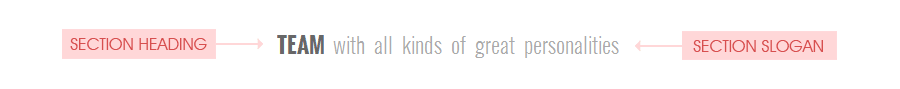
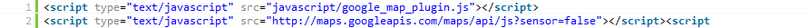

Important
General info
This template includes following pages: index.html, index-boxed.html, index-paginate.html, index-paginate-boxed.html, blog-single.html, blog-single-boxed.html, archive.html, archive-boxed.html, send.php.
The core stylesheets (CSS) of this template are placed in /css/ folder.
To make things easier for work we created several css files: style.css, blog.css, prettyphoto.css, and flexslider.css
All Images are in /images/ folder.
All Javascripts files are in /javascript/ folder.
We have created 11 color schemes for this template. Default one is orange, so if you want to change there is only 1 easy step you have to do. Simple open custom.js file and edit this line by typing in desired color (2 line):
var color = "orange";
This is color schemes offered in this template
- tealgreen
- green
- red
- pink
- purple
- orange
- navyblue
- blue
- magenta
- yellow
- cream
If you want to change the tone of chosen color scheme, open colors folder placed inside css folder, find the scheme's css file, and do anything you like with it.
This theme is a fixed layout with one and two columns (full width page and page with sidebar). A layout with one column contains three main things, header, sections with main content and footer. The general structure looks like this:
Streched layout Your content goes here
Your content goes hereYour content goes here
Boxed layout
Your content goes hereYour content goes here
Everything is pretty much straight forward. Logo image is placed inside <a> tag wrapped with <div> tag with id="logo".
2. Navigation
The navigation is placed inside <ul> tag with class="menu" and wrapped with <div> tag with id="primary-menu". The HTML structure for the navigation from this template looks like this:
1. Logo inside fixed header
This part is solved with jquery, and there is nothing you need to do with it, except creating a smaller version of your logo to fit the fixed header height, which is lot more smaller.
Each section, such as portfolio, about, blog etc., starts with some heading and cache phrase. This part is wrapped with <div> with class="section-title". The heading is wrapped with "h1" tag with class:"title", while slogan is placed inside "span" tag. And the finally result looks like this:
Team with all kinds of great personalities

We've created several text align options for this part, such as center, left or right text align. Left text align is a default, therefor you don't need to add additional class. But in order to use right or center text align you need to add this additional class to <div> with class="section-title"
Text align centerTeam with all kinds of great personalities
Text align right
Team with all kinds of great personalities
To use socialize widget you must include socialize-bookmarks.css file inside the head tag of your HTML document:
Everything is pretty much straight forward. Everything is wrapped inside <ul> tag with class="social-bookmarks" .Now we need to create a list in which each <li> tag will have name of specific network. It should look something like this:
Here is the list of networks offered in this template:
If you want an image stretch to fit the page and automatically resize as the window size changes you must include jquery.backstretch.min.js file inside the head tag of your HTML document:
Once you do that you'll also have to add this additional code, and make sure you enter precise image path:
To be more precise this is the line you have to edit:
images/pattern/bg1.jpg
If you want to display your content inside grid first you have to create list. It has to have class grid, row4 (although you can put row3, row5, or row6), and depending on wheather you want to present a list of clients or services, add class clients or services. And the final result should look like this:
Clients listServices list
- Your content goes here
- Your content goes here
- Your content goes here
Examples with different number of columns
- Your content goes here
- Your content goes here
- Your content goes here
- Your content goes here
Everything is pretty much straight forward. Everything is wrapped inside <ul> tag with class="skills-graph". Now, once you do that, name of the skill and it's precentage are placed inside <p> tag, while the lenght of progress bar depends on class you have to applied to <span> tag. The content of the <li> tag should look like this:
Web design 70%
Remeber that class applied to <span> tag has to be stated in numbers.
And the final result should look like this (example taken from our template):
Web design 70%
Wordpress 100%
Jquery 85%
Print 31%
Logo design 51%
Seo 75%
If you wish to use this option several times, you have to change the ID applied to <ul> tag, in this case will name it id="example-2.
Now, once you do that open custom.js file, and add this line anywhere between 172 qnd 175 lines.
graph_init("example-2", 1000);
To make things easier for work we created several css files: style.css, blog.css, prettyPhoto.css, flexslider.css
If you would like to edit a specific section of the site, simply find the appropriate label in the CSS file, and then scroll down until you find the appropriate style that needs to be edited.
style.cssStyle.css file contains all of the specific stylings for the page. The file is separated into sections using:
- 1. RESET
- 2. MAIN CONTENT
- 3. PRIMARY MENU
- 4. SECTION TITLE
- 5. FOOTER
- 6. TWITTER
- 7. PHOTOSTREAM
- 8. COLUMNS
- 9. TEAM
- 10. GRID VIEW
- 11. BUTTONS
- 12. HIGHLIGHTS
- 13. DROPCAPS
- 14. DIFFERENT UL STYLES
- 15. TOGGLE
- 16. ACCORDION
- 17. PORTFOLIO
- 18. PORTFOLIO THUMBNAIL HOVER
- 19. SHAPED STYLE ITEM
- 20. HEXAGON STYLE
- 21. CIRCLE STYLE
- 22. TRIANGLE STYLE
- 23. PORTFOLIO FILTERABLE NAVIGATION
- 24. ITEM NAVIGATION
- 25. CONTACT MODAL WINDOW
- 26. CONTACT
blog.css
Blog.css file contains all of the specific stylings for the blog single page, as for blog section on main page. The file is separated into sections using:
- 1. RESET
- 2. WIDGET
- 3. POST
- 4. POST CONTENT
- 6. POST INFO
- 7. SHARE
- 8. COMMENTS
- 9. COMMENT FORM
- 10. WP-PAGINATION
NOTE: Make sure you put jquery file generated frorm google directory and custom.js, header.js, twitter.js, prettyPhoto.js, bra.photostream.js files inside the head tag of your HTML document on each page.
jquery.min.js
jquery.min.js file is a "MUST", this is a file that allows other javascript files to work. Without this file most of the javascript effect will not work, so please make sure you insert this file inside of the head tag of your html document.
custom.js
custom.js file contains some additional javascript code lines that support some of the javascript effects such as smooth scroll, toogle content, accordion, portfolio overlay effect etc.
All other javascript effects and their customization will be explained further down.
Sources and Credits
We've used the following images and javascript files as listed.
- All porftolio and blog image examples are taken from Justin Mezzell
- Except this one take from StockDesign
- All background patterns are free downloaded from Subtle patterns
- Javascript file for contact form validation is taken from http://trevordavis.net/
- Javascript file for portfolio filterable effect is taken from http://isotope.metafizzy.co
- Javascript and css file for picture view are taken from http://www.no-margin-for-errors.com/
- Javascript file for slideshow is taken from http://www.woothemes.com/flexslider/
- Javascript file for twitter is taken from http://tweet.seaofclouds.com/
- Social media icons can be free downloaded here Icon set
- Big thanks to Aleksandra Jovanić for allowing us to use her flickr account
- Big thanks to Mark Robinson for allowing us to use his pinterest account
To use this simple slider you must include jquery.flexslider.js and flexslider.css files inside the head tag of your HTML document:
First, start with a single containing element, div with class="flexslider". Then, create a "ul" tag with class="slides, this part is mandatory because the slider targets that class specifically. Put your images into each "li" tag and the final result should look like this:


And this is the structure of single slide with caption, adding class="flex-caption" to "p" tag is mandatory:

This is a place for a brief description.

This is a place for a brief description.

Here we go again, history repeating!

Once you do that, you have to add additional code lines inside jquery.flexslider.js file, and type in slider's ID in second row. All the rest options are explained further down.
$(window).load(function() {
$('#portfolio-slider').flexslider({
animation: "slide",
slideDirection: "horizontal",
slideshow: true,
slideshowSpeed: 3500,
animationDuration: 500,
directionNav: true,
controlNav: false
});
});
Depending on what effect you wish to use for slideshow, "fade" or "slide", you have to edit this line inside jquery.flexslider.js:
animation: "fade",
Depending on what sliding direction you wish to use for slideshow, "horizontal" or "vertical", you have to edit this line inside jquery.flexslider.js:
slideDirection: "horizontal",
If you want to change the transition time between two slides you have to edit this line inside jquery.flexslider.js:
slideshowSpeed: 3500,
If you want to change the speed of the fading/sliding effect between two slides you have to edit this line inside jquery.flexslider.js:
animationDuration: 500
If you want to enable previous/next navigation, "true" or "false", you have to edit this line inside jquery.flexslider.js:
directionNav: true,
If you want to enable for paging control of each slide, "true" or "false", you have to edit this line inside jquery.flexslider.js:
controlNav: truePortfolio
To use portfolio filterable effect you must include jquery.isotope.min.js file inside the head tag of your HTML document:
The navigation is wrapped inside <div> tag with class="filterable" and placed in <ul> tag with id="portfolio-nav". Now we need to create the navigation list in which each <li> tags will be linked with specific category. It should look something like this:
Once you do that create new list which must have id="thumb" and add your portfolio items. This list must be wrapped with <div> tag with class="portfolio-grid" in order to achive filterable effect. The final result should look like this:
- Your content goes here
- Your content goes here
- Your content goes here
Now, in order to have one category selected and displayed you have to add specific class to each <li> tag. Those classes have to be the one listed in navigation list mentioned above:
Depending on number of columns you want to display, you have to add specific class to each <li> tag. This template offers two, three or four columns options for portfolio page.
Shaped portfolio items
Html structure is the same as in other portfolio pages, to be more precise, everything has to be done like mentioned above, except two things.
The list with id="thumb" has to have class="shaped" with additional class of shape you wish to use for your portfolio items. The final result should look like this:
- Your content goes here
- Your content goes here
- Your content goes here
One more thing, classes such as col2, col3, col4 doesn't need to be added to <li> since shaped items have it's own size specified in css. But class="item" and one of the class of the category listed in navigation must remain. The final result should look like this:
To use prettyphoto-picture view include prettyPhoto.js and prettyPhoto.css files inside the head tag of your HTML document:
In order to preview large image, simple to make it work, you have to insert data-rel="prettyPhoto[]" inside each <a> tag. Here's the example:

If you want to display all pictures from one of the categories, e.g. web, logo, video, as in this template you have to insert specific word inside brackets. Here's the example:
You can also create separated galleries within each portfolio item, it will load the pictures relative to the thumbnail/project that the user is clicking on. In brief you can view several pictures within one. In order to do that you also have to give different rel name for each <a> tag. Also add class "hide" to each <a> tag, except first one. Here's the example:
preview
{kind=link}
{kind=link}
Prettyphoto has several default styles:
- light_rounded
- light_square
- dark_rounded
- dark_square
In this tempate we've used "light_rounded" style, but if you want to change it please open prettyPhoto.js and edit this line (890 line):
theme: 'pp_default'
Contact form validation
In order for contact form to work you must include form-validate.js file inside the head tag of your HTML document:
It's a must
And finaly, in order to receive messages you must edit this line and type in your own email address. It's placed inside send.php file inside body tag (33 line):
$email_to = "email@yourprovidername.com";
Mandatory fields
1. In order to make input mandatory here`s how the code for specif input has to look like. Pay attention on input`s class.
2. In order to make input mandatory by typing only phone numbers, here`s how the code for specif input has to look like. Pay attention on class input.
3. In order to make input mandatory by typing only valid email, here`s how the code for specif input has to look like. Pay attention on class input.
1. If you want to change message alerts you can change that by editing following code line inside form-validate.js file (9 line)
$(this).parent().append('Required');
2. If you want to change message alerts for invalid email you can change that by editing following code line inside form-validate.js file (16 line)
$(this).parent().append('Invalid');
3. If you want to change message alerts after contact form is being filled in you can change that by editing following code line inside form-validate.js file (14 line)
$("form#contact-form").before('THANK YOU!Your email was successfully sent. We will contact you as soon as possible.
');
Fullwidth map / popup window
Html structure for this layout should look like this:
Your button goes hereYour form goes here
Google MapTo use google map you must include jquery file generated frorm google directory and google_map_plugin.js file inside the head tag of your HTML document:

First, start by creating a "div" tag with class="google-map", this part is mandatory because the jquery plugin targets that class specifically.
Once you do that open google_map_plugin.js file and edit this line by typing in desired address (69 line)
$('#bra-map').bra_google_map({location: 'Amsterdam', zoom: 15});location: 'Amsterdam'
Twitter feedTo use twitter feed you must include twitter.js inside the head tag of your HTML document:
Latest tweets are displayed inside div tag with "tweets" class:
If you by any chance rename <div> tag with class="tweets" where all the latest tweets are displayed, don't forget to change it inside this code line in twitter.js file (250 line):
$(".tweets").tweet({
In order to display twitter feeds from your twitter account, open twitter.js file and edit this line by inserting your twitter name:
1. Twitter feed displayed inside footer or anywhere else inside the page (252 line inside twitter.js file):username: "brankic1979",In order to change a number of twitter feeds displayed, you have to edit this line by inserting desired number (254 line inside twitter.js file):
count: 2,
2. Twitter feed displayed inside notification wrapper bar (268 line inside twitter.js file):username: "brankic1979",In order to change a number of twitter feeds displayed, you have to edit this line by inserting desired number (270 line inside twitter.js file):
count: 2,PhotostreamTo use photostream you must include bra.photostream.js file inside the head tag of your HTML document:
First, start by creating a "div" tag with class="photostream", this part is mandatory because the jquery plugin targets that class specifically.
NOTE: Since we are using several photostreams, each photostream has to have specific class attributed to "div" tag with class=photostream". Here's an example from dribbble photostreamOnce you do that, you have to add additional code lines inside bra.photostream.js file, and add additional code lines by typing in photostream's additional class mentioned above, username, numbers of images displayed and name of the social network.
Photostream's additional class
('.dribbble_list')Username
user: 'brankic1979'Numbers of images displayed
limit:10Name of the social network
social_network: 'dribbble'or
social_network: 'instagram'or
social_network: 'flickr'or
social_network: 'pinterest'Here's the final result:
$(document).ready(function() { $('.dribbble_list').bra_photostream({user: 'brankic1979', limit:10, social_network: 'dribbble'}); });
Hope this file will help you. Enjoy!